《手搓魔法》11-09 优化方案（制作人汇总，待你确认）
2026-11-09 · 来源：美术审计 32 条、新手体验审计 26 条、吸量审计 22 条、RETRO_1108 · 只是方案，你确认前不动代码、不动商店
三份审计（美术 32 条、新手体验 26 条、吸量 22 条）合并去重后共 48 条：上线阻塞 8 条，美术 13 条，新手体验 13 条，吸量 14 条。
我的判断：插画层已经够格，拖后腿的是三件事。 第一，有几处东西是坏的（开包空白、广告按钮点了没反应、旧游戏的名字漏出来）；第二，新手前 3 局先被教程捧着打到第 4 关，再在第 1 关连死两局，还拿 0 结晶；第三，商店素材的第一屏没把「一手牌变成一个大数字」讲出来。上线前只做这三件事，其余的往后排。
上线日不由素材决定，由广告四项门槛决定（激励协议、备案、开广告、真机测过）。所以第一天先解门槛，素材和新手体验并行推进。
全部方案不改核心玩法：规则、发牌、数值曲线都不动。涉及难度的只有「新手护航」，单列出来请你拍板。
数量统计
| 板块 | 条数 | P0 | P1 | P2 |
|---|
| 上线阻塞 / Bug | 8 | 8 | 0 | 0 |
| 美术品质 | 13 | 2 | 9 | 2 |
| 新手体验 | 13 | 5 | 8 | 0 |
| 吸量 | 14 | 5 | 7 | 2 |
| 合计 | 48 | 20 | 24 | 4 |
|---|
成本：S ≤ 半天，M 1–3 天，L 一周以上。P0 = 上线前必须做；P1 = 两周内做；P2 = 上线后看数据再做。
约束检查
| 约束 | 哪些提案碰到了，怎么处理 |
|---|
| 核心玩法不变 | FTUE P0-2「新手护航」、P2-3「另一世推后」、P1-3「可组合描边提示」都碰到了难度。处理：规则和数值曲线不动，只调新手前 3 局的商店保底、敌人池和提示，列为决策 Q2 / Q8；描边提示砍掉，只保留牌型小图标。 |
| 守关者立绘只用 NovelAI 原管线 | 美术 P0-2 元素徽记建议「gpt-image 出 4 张」：徽记不是立绘，不违反，但为了画风统一，改用 NovelAI 或从标题图元素环衍生。掌心徽记（A12）取材自守关者，同样走 NovelAI。宣传片 v4 不用 AI 视频重画守关者。 |
| 克洛伊原 CG 保留 | 没有提案要重画克洛伊。禁咒 2.5D（A13）只对 12 张禁咒 CG 抠层、不改画面，不涉及克洛伊；掌心 CG 字幕只在下方加暗带，原图不动。 |
| 不剧透阿斯特里昂 | 阿斯特里昂是第 8 关守关者。截图重排、宣传片 v4、安利视频、创作者素材包里不出现第 8 关的画面和名字；本页也没有放第 8 关的截图。 |
| 不删旧美术 | 美术 P1-10「删掉约 85 MB 旧换皮资源」违反这一条。 改成：旧资源移到不打包的归档目录（仍留在仓库里），只把它们从包体里排除。 |
| 改版先出评审页 | 第二批的 6 张评审页就是为此设的。营地相关的改动（F3、A9）按「当前截图 + 红框标注 + 改后截图」三联图提交，明确是微调。 |
| 分发状态保持预约 | 吸量 P0-07 定时转可玩是发行决定，列为 Q3，你拍板之前一律保持预约。中途的资料提交用 tcm release --now，状态不变。 |
代码核实
| # | 说法 | 结论 | 依据 |
|---|
| V1 | 开包界面 st.rects 为 nil（pack.lua:466） | 已核实，而且比审计说的更严重 | 这不是直达开关才有的问题，而是今天的提交 68faf54 引入的回归：那次改「牌型升级卡点一下直接升级」时，顺手删掉了 466 行上面的 st.rects = st.rects or {}。S.enter 里没有初始化 st.rects，全仓库也没有别处给它赋值，所以真实流程（商店买包后自动拆包）每一帧都会在 466 行报错，卡区一片空白。68faf54 已经推到 origin/main。修法是一行：在 S.enter 里加 st.rects = {}。 |
| V2 | 守关详情显示旧 Boss 名「三叶 · 三叶草园丁」 | 已核实 | popups/detail.lua:130 的守关分支用 tx.foeLine(key) 拼出副标题，取的是 data/text.lua:885 里旧版的 name = "三叶"、title = "三叶草园丁"。theme_text 只精确替换整串「三叶草园丁」，拼起来的「三叶 · 三叶草园丁」匹配不上；heroineShown() 只在剧情模式开着、且这一关有对应人物时才覆盖，其他情况都会漏出来。其他 bl_* 守关可能有同样的问题，修的时候要整体扫一遍。 |
| V3 | 源泉残语从子页面返回时再次触发（lobby.lua:258） | 已核实 | lobby.lua 的 S.enter 每次都无条件地设 st.emberAt = app.time + 1.3，然后 EM.start(app, st, EM.pending(app)) 播下一段「已满足条件、还没讲过」的残语。门槛只看「讲过没有」，不看「这次是不是刚从局里回来」。一局打到第 4 关后会同时满足好几段，每次从魔法书或新征途回营地都会再播一段。实录 494 / 509 / 563 / 578 / 619 s 各播了一段，和代码吻合。 |
| V4 | 广告不可用时按钮照常显示 | 已核实 | P.adState()（platform.lua:107）只查引导局和次数上限，不查 ops.adAvailable()，所以按钮照常显示；点下去之后 P.ad() 才在 143 行发现不可用，只弹一句「视频暂时没有准备好，稍后再试」。同一处还有 rawget(_G, "DIRECTOR") 为真时直接发奖励，构建前必须确认它是假。 |
| V5 | 分享海报还是旧口号 | 已核实 | ui/share.lua:216 写着「从搓出第一颗火球，到毁灭世界」，标题用代码画。 |
| — | 开场 CG 约 83 s、点屏幕无效；新手前 3 局的难度断崖 | 待核实 | intro.lua:131 确实有 m.noTap = true，83 s 是 FTUE 按 mp3 时长推算的，和实录吻合，没有再单独计时。难度断崖来自机器人实测（n = 2 局），需要按决策 Q2 跑一次 3 次施放的 sim 和 5 人真人测试（F13）来确认。 |
上线阻塞 / Bug（8 条）
东西坏了，或者不做就不能上线。全部 P0，大多是半天以内的活。
B1
开包界面空白（今天引入的回归）
P0成本 S已核实 V1问题买补给包后自动拆包，卡区整块是空的，每一帧报 pack.lua:466 attempt to index a nil value (field 'rects')。
方案在 S.enter 里加 st.rects = {}；补一条无头回归：买包 → 拆包 → 卡区非空。修完再出任何构建。
预期收益开包是肉鸽最爽的时刻；不修的话任何新包都会坏。
来源：美术 P0-1
B2
广告不可用时的兜底（含死亡弹窗）
P0成本 S–M要你决定：Q1、Q2已核实 V4问题广告没开通，8 个点位照常显示，点了只弹「视频没准备好」；施放默认 −1、靠广告补回来，所以所有人都永久少一次施放；死亡时「再搓一次（看视频）」直接叠在叙事字幕上。
方案① adState 先查 adAvailable()，不可用就隐藏按钮，ad_show 也只在可用时上报；② 施放 −1 的兜底按 Q1 的方案做；③ 死亡弹窗放到致命魔法演出结束、判词出现之前，不和字幕叠在一起，并且只在差距 ≤30% 时弹；④ 构建前检查 DIRECTOR 不为真。
预期收益避免首日差评，恢复新手第 1 关的通过率；广告开通后，「再搓一次」的点击率反而更高。
来源：FTUE P0-6、吸量 P0-02、RETRO P0-02 / 03 / 13
B3
广告四项门槛查不到状态
P0成本 S + 审核等待要你决定：需要你操作（补凭据、同意签协议）问题tcm features 报 no_web_cookie（账号 podium）；激励协议、备案、开广告、真机测试，现在一项都确认不了。
方案你在中控后台「账号管理 → 凭据 → TapTap 网页」补上 podium 的 cookie → tcm features → tcm incentive --yes → tcm filing --map-version <最新 Spark>（不带参数会备案线上旧包 Spark 40）→ 备案通过后 tcm enable --feature ads → 真机 8 个点位各看一次。
预期收益不做就不能转可玩。这是整个上线计划的关键路径。
来源：吸量 P0-01、RETRO P0-01
B4
旧版文字泄漏
P0成本 S已核实 V2、V5问题守关详情写着「三叶 · 三叶草园丁」（配的却是格雷戈尔的立绘）；分享海报还是旧口号；补给包提示写成「不想要可以绕过」；引导里的「——」单独换行。
方案详情副标题改用 tx.boss 的新名字，所有 bl_* 一起扫；海报直接画 logo_wordmark.png，口号改成「从小火球到灭世禁咒」；「跳过」加进豁免词；「——」前断行。再加一条测试：扫描所有弹窗实际渲染出的字符串，不能出现 text.lua 的旧角色名和「晋级32强」「世界总冠军」这类旧文案。
预期收益第一印象和信任感，分享出去的海报品牌一致。
来源：FTUE P0-7、美术 P0-5、吸量 P1-07a
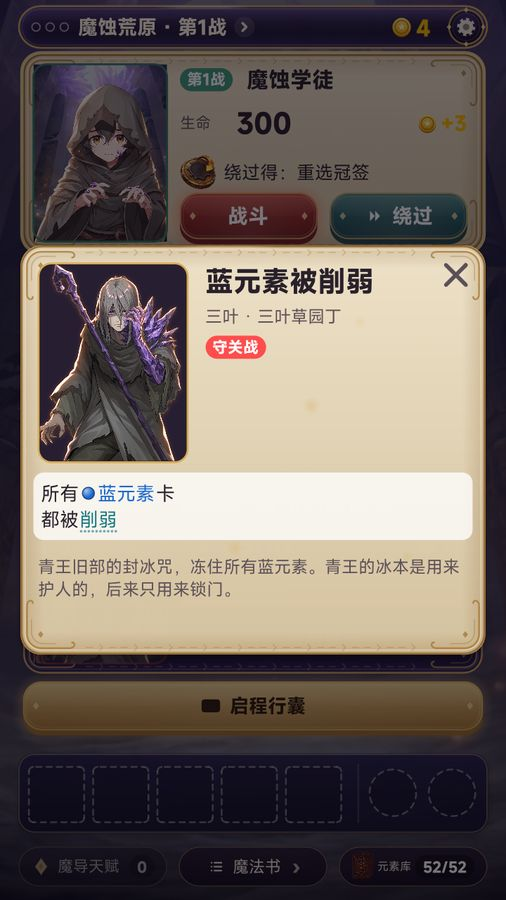
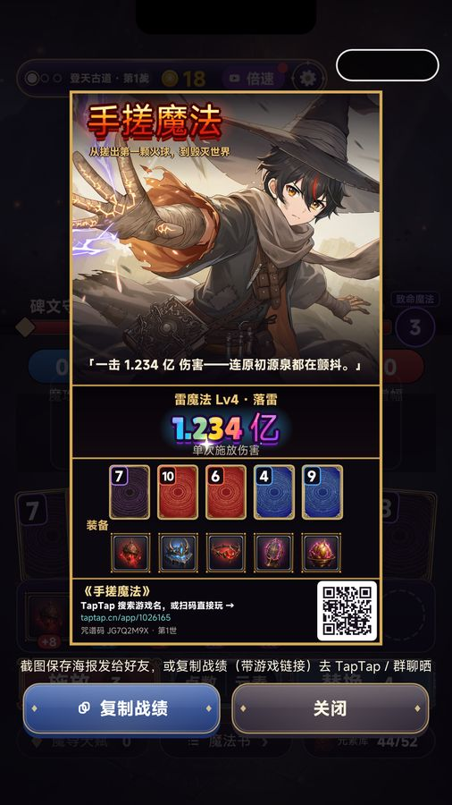
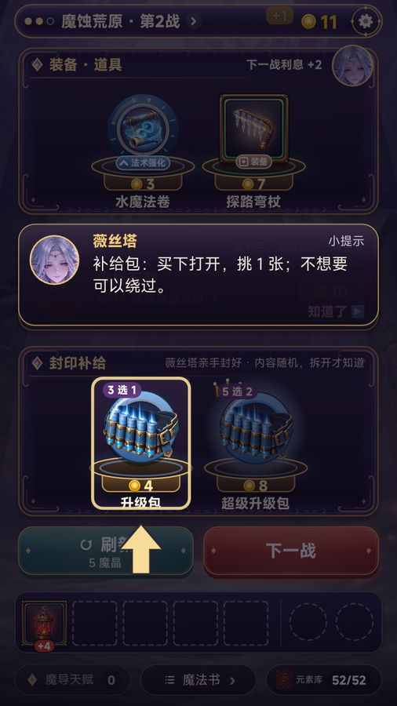
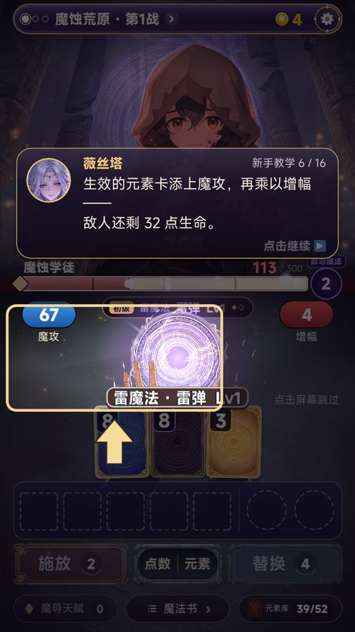
B5
压字和裁字（4 处）
P0成本 S问题顶栏的 › 压住「守关战」的「战」；登顶页的咒谱码被「继续无尽模式」盖住一半；设置页底部的版本号被裁；绕过 toast 半透明地叠在卡片标题上。
方案› 按文字实际宽度定位；登顶页按钮区按内容高度下推；设置页给版本行留高度；toast 用不透明暗底，或避开标题区。
预期收益压字是「没打磨」最直接的信号。
来源：美术 P0-8
B6
引导提示盖住守关者规则
P0成本 S问题两次守关战登场时，小提示正好压在「手牌上限 −1」「本战只能打出 1 种魔法」的字卡上，新手死了也不知道为什么。
方案守关登场字卡播放期间和之后 2 s，小提示排队等待（tutorial.lua 的 coach 队列加一个 foe_entry 忙碌判断）。
预期收益守关战胜率，「死得明白」。
来源：FTUE P0-3
B7
源泉残语重复触发
P0成本 S已核实 V3问题从魔法书、新征途页回到营地，会再全屏播一段残语，要点 3 次。
方案残语只在「从局里回到营地」时自动播 1 段，从子页面返回不触发；没播的用薇丝塔头上的光点提示，玩家主动点了再播（入口已经有）。
预期收益营地 → 开局转化率；主动点开的玩家更愿意看完。
来源：FTUE P0-5
B8
合规小项：隐私政策和「星铁」
P0成本 S问题隐私政策第六节漏写「结晶翻倍」点位，隐私资质还在审核；Maker 一句话简介写着「星铁画风」（IP 联想）。
方案补齐 privacy.html 第六节后重新发布；删掉「星铁」，并同步到构建。
预期收益避免驳回，是转可玩清单里的硬项。
来源：RETRO P0-05 / 08、吸量 P0-07
美术品质（13 条）
插画层不动，修的是插画和 UI 之间那一层：牌面、空状态、演出里的矢量图元、按钮颜色。
A1
禁咒和成王演出打磨
P0成本 S要你决定：评审页①问题禁咒名「焚天」淡粉色压在亮橙底上，几乎看不清，顶部还漏出被裁掉一半的标题卡；禁咒收尾是一层灰白蒙版，像掉帧；成王演出是灰色蒙版加实心白环，左边漏出约 20 px 黑条。
方案名字下加一条深色渐变带，描 3 px 深边，填充用元素色到白的竖向渐变；标题卡残字同步淡出；闪光一律用加法混合的元素色径向爆光（成王用金色），峰值 alpha ≤0.7；全屏层四边各外扩 40 px，抵消震屏位移。
预期收益12 个禁咒是全游戏的高光，也是宣传片和截图的主素材。
来源：美术 P0-6、P0-7
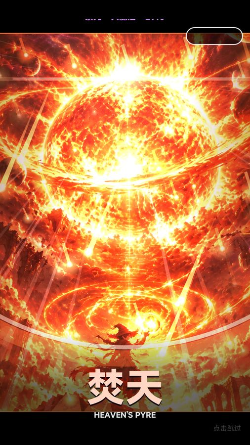
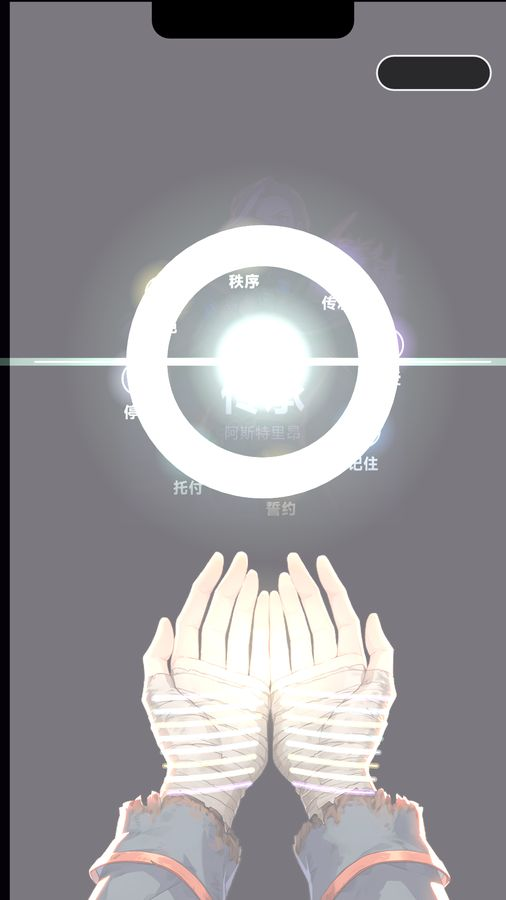
A2
另一世敌人立绘补超分
P0成本 S问题另一世 16 张 foe2/*_alt.png 是 920 高的 256 色图，主线已经精修到 1380；手机上边缘有色带。
方案用现有的 refine_assets.py（Real-ESRGAN + Lanczos + 回混）原样跑一遍，再做漂移检查。不经过生成模型，不改画面。
预期收益另一世和主线一样清楚。
来源：美术 P0-9
A3
元素牌加牌面（兼顾色弱）
P1成本 M要你决定：评审页②问题数字牌只有一个色漩涡加角标，看起来像牌背；元素只靠颜色区分，色弱玩家组不了同花；J/Q/K 和数字牌精度差得太远。
方案只做 4 枚元素徽记（红焰、蓝滴、黄日、黑渊），按扑克点阵摆放 A–10，漩涡压暗当纸纹；角标数字旁边加同一枚小徽记（形状区分元素）；选中的牌加一道斜向扫光，有强化或版本的牌加闪箔。
预期收益手牌一眼就能数清点数、认出元素，这是质感上最大的一步；52 张牌只需要 4 张图。
来源：美术 P0-2、P1-4，FTUE P1-11
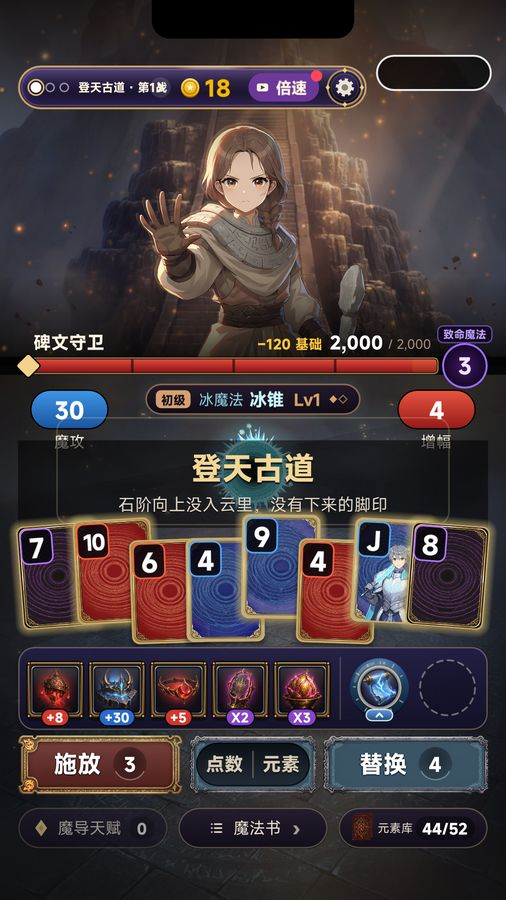
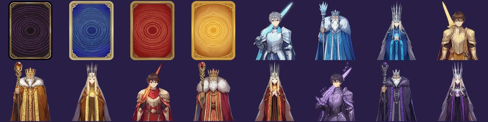
A4
空状态设计（空槽、典籍、掌心）
P1成本 S要你决定：评审页①问题装备和道具的空槽是白色虚线框，像网页线框图；典籍 149 个紫块加大问号；掌心空格是「· · ·」。
方案空槽改成 NanoVG 内凹刻槽（内阴影、底部高光、25% 符文）；典籍未解锁项用原图标乘黑、0.35 透明度的剪影，加封印纹（守关者和人物页保留问号，但换成封印牌背，防剧透）；掌心空格改成凹刻暗纹。
预期收益收藏页从「空」变成「待解锁」，底部常驻区有了材质。
来源：美术 P0-3、P0-4
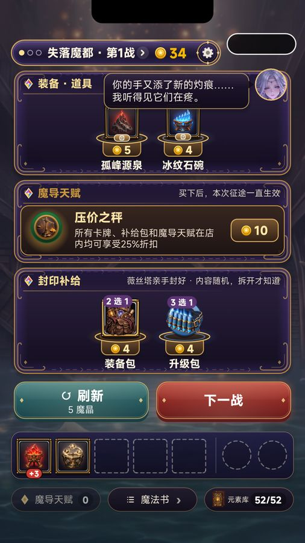
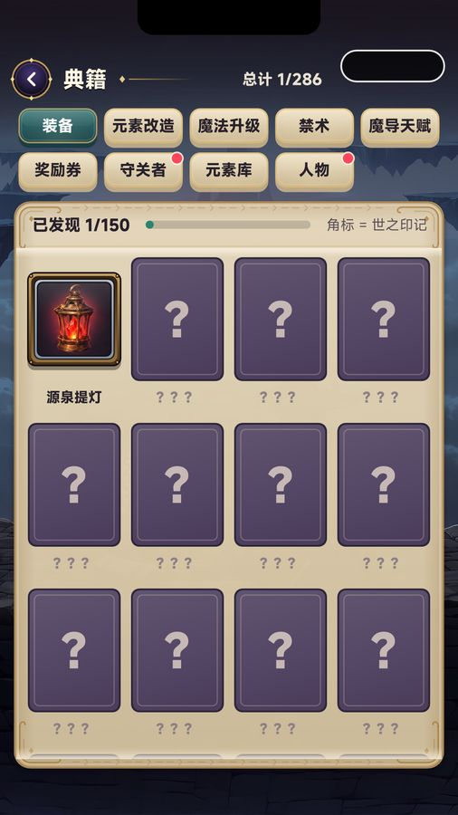
A5
排版：伪斜体、小字、字幕
P1成本 S–M要你决定：评审页①问题营地副句和指引页段落是机械倾斜的中文；正文大量 10–11 号字；开场字幕英文是主行、中文更小，还有「力——」单字成行；掌心 CG 字幕压在图上读不清。
方案取消中文倾斜，改成正体、暖灰色、加大字距；全局最小字号 12（健康提示除外）；开场字幕改成中文主行、英文副行，断行优先在标点；掌心 CG 字幕下方加 30% 暗带，原图不动。
预期收益可读性，第一屏更正规。
来源：美术 P0-11、P1-12，FTUE P1-11、P2-4
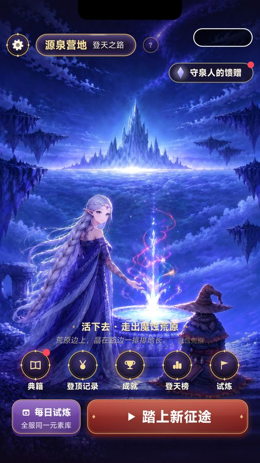
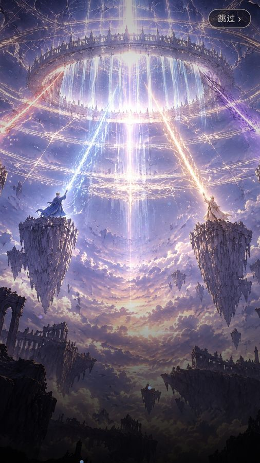
A6
结局页的情绪
P1成本 S要你决定：评审页①问题败北页立绘区在 y≈620 有一条横向硬边；登顶页底色是灰雾，和失败页几乎一样，四个按钮四种颜色。
方案立绘区底部加 120 px 羽化；胜利加暖金色调、奖杯光芒和持续金尘，失败用冷紫、降饱和；按钮收成主、次两级（配合 A8）。
预期收益登顶这一刻的截图可以直接拿去做宣传。
来源：美术 P0-12、P1-11
A7
伤害数字停靠态加底板
P1成本 S要你决定：评审页①问题数字停到左边以后只剩约 24 pt 的「−64」，压在立绘暗部，存在感很弱。
方案保留你 11-05 定的「移到边上、不挡立绘」。停靠位加半透明暗底板和元素色竖条；命中的前 0.14 s 峰值放大到 1.8 倍，再加 2 帧白描边。如果你介意峰值那一下挡立绘，就只加底板。
预期收益「打中了、打了多少」更清楚，也直接服务截图 1 和宣传片。
来源：美术 P1-13
A8
按钮和面板统一（3 级按钮、2 种面板）
P1成本 M要你决定：评审页④问题按钮有 8 种颜色、面板有 3 套材质；魔法书「强化」是全游戏唯一的长春花蓝扁平按钮；亮羊皮纸做全屏面板，在夜色主题里像开了一盏日光灯。
方案按钮：主按钮红宝石金边（每页最多一个）、奖励和广告用金色、次按钮夜紫描金、危险操作用暗红描边空心；面板：全屏列表用夜紫，羊皮纸只留给详情、残卷、结算单。强化按钮只在结晶够用时亮金。
预期收益颜色噪声少了，层级更清楚，这是「贵」的核心。
来源：美术 P0-10、P1-6
A9
营地随进度变化
P1成本 M要你决定：评审页⑤（三联图）问题通关后的营地和第一天一模一样，还是那口将涸的泉。
方案只叠层、不重画：泉水光柱按最高关分 4 档；8 块符文石按已击败的守关者逐块点亮；掌心印记在夜空连成星座；通关后天空加黎明暖色。
预期收益「我把世界救回来了一点」的可见回报。
来源：美术 P1-7
A10
八关色彩、敌人分级、另一世身份
P1成本 M要你决定：评审页③（8 关对比）问题8 张关卡背景都在灰褐区间，牌桌区每关都是同一层暗灰蓝；普通、精英、守关用同一条血条和名牌；另一世只有一个小标签。
方案每关一套主色、暗部色和粒子（代码调色，不重画背景）；精英用银色名牌和饰角，守关用金徽章名牌、金框血条和延迟掉血条；另一世把金色描边换成银蓝，背景加逆转的符文环，入场做一次镜面翻转。第 8 关的专属处理只在游戏内做，不进任何对外素材。
预期收益攀登有了「走过不同地方」的感觉，Boss 战有仪式感，另一世一眼就能看出来。
来源：美术 P1-2、P1-3、P1-9
A11
包体瘦身和真机性能
P1成本 M问题assets 有 255 MB，其中约 85 MB 是旧换皮资源；lore 图是 2 倍过采样；全部图片解码约 2.1 GB，真机没测过。
方案不删旧美术：先去掉 story_art、lounge、heroine_* 的回退引用，再把旧资源移到不打包的归档目录（仍留在仓库）；lore 降到 1620 宽（原图另存）；翻页时释放离屏大图；2–3 台千元机跑一整局、12 个禁咒、翻完图鉴，记录帧率和内存峰值。
预期收益下载体积约少 35%，低端机不再因内存闪退。
来源：美术 P1-10（已按「不删旧图」改写）
A12
禁咒 2.5D 镜头（先做火系样片）
P2成本 M–L要你决定：评审页（样片）问题每个禁咒是标题卡 → 静止 CG → 闪白；CG 上叠的白弧线、折线裂缝、五边形碎石都是矢量图元，和厚涂 CG 冲突。
方案从 12 张禁咒 CG 抠出主角和前景两层（只拆层、不改画面），三层视差推镜；6–8 张加法贴图替代矢量线条；标题卡背景改成 CG 本身的模糊暗化。先只做火系一支，评审页放前后对比 GIF，通过了再推到 12 系。
预期收益宣传片和安利视频直接受益。
来源：美术 P1-1、P2-6
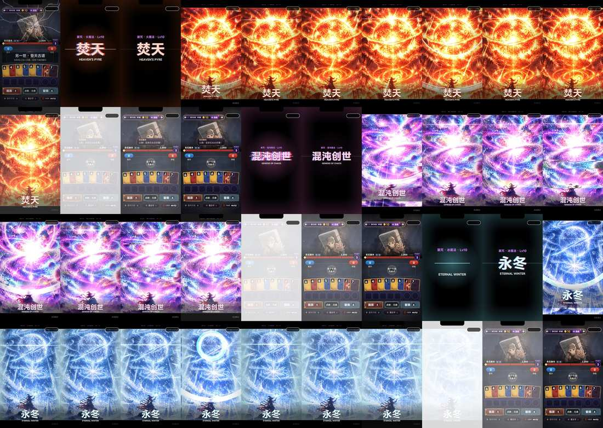
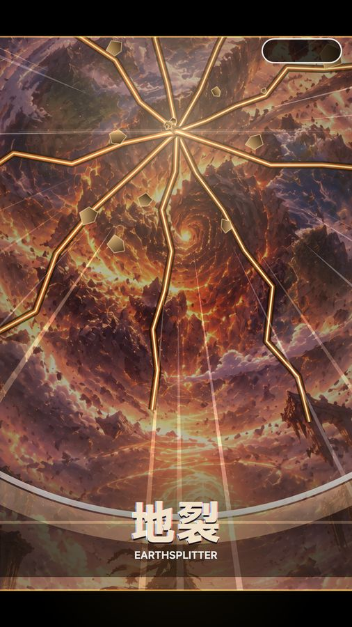
A13
P2 打磨包
P2成本 M–L要你决定：标题字体要你选方向问题营地 7 个功能图标是单色几何字形；薇丝塔在营地里一动不动；掌心印记是纯渐变半圆；流派头像灰底低饱和；守关详情立绘像贴纸；四类图标外框各不相同；商店的商品又小又空；标题全是 MiSans 粗体。
方案按顺序做：营地彩绘图标（成就同款风格）→ 掌心 16 枚徽记（NovelAI）→ 守关详情立绘换关卡背景底 → 图标统一外框 → 商店商品放大陈列 → 薇丝塔待机呼吸（抠层、只补背景）→ 流派头像调色 → 标题展示字体（思源宋体 Heavy 子集，先出 3 个方向的情绪板）。每一项都单独过评审页。
预期收益首屏和收藏物的质感。
来源：美术 P1-5、P1-8、P1-14、P2-1 ~ P2-5
新手体验（13 条）
局内教学本身合格。要解决的是 83 秒的开场、太小的第一个「哇」、引导局之后的断崖，和一次塞满的营地。
F1
开场 CG 首次播短版（约 30 s）
P0成本 S要你决定：Q5待核实（时长按 mp3 推算）问题开场约 83 s、13 句英文配音，点屏幕没反应，只有右上角的小「跳过」。这是第一个流失点。
方案首次只播 i1、i5、i6、i7 四张，约 30 s；完整版在第一次击败荒原守关者后作为奖励播放，并放进「设置 → 重看开场」。保留你 11-07 的规定（不能点一下跳过单张 CG），只把「跳过」放大、移到下沿居中。字幕层级见 A5。
预期收益首启 → 首战的到达率，对 D0 流失影响最大。
来源：FTUE P0-1
F2
新手护航：消掉引导局之后的断崖
P0成本 S–M要你决定：Q2、Q8待核实（机器人 n=2）问题引导局用固定种子和安排好的商店打到第 4 关；之后两局在第 1 关就死，第 3 局 0 结晶，而且第 1 战就是另一世敌人。
方案规则和数值曲线都不动：① 广告不可用时馈赠白送，恢复 4 次施放（Q1）；② 第 2–3 局的第一个商店保证出现 1 件基础增幅装备；③ 前 3 局不出另一世敌人（timeline.lua 加 runs ≥4）。上线前用 3 次施放的 sim 重跑一遍（现有 sim 是 4 次施放的旧数据）。
预期收益第 2、3 局第 1 关守关者的击破率、D1；「3 局内至少有 1 次正反馈」。
来源：FTUE P0-2、P2-3
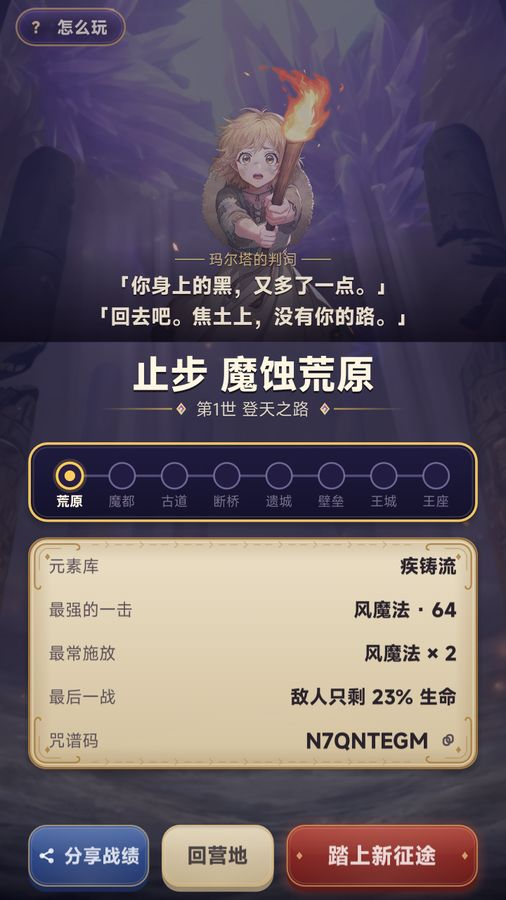
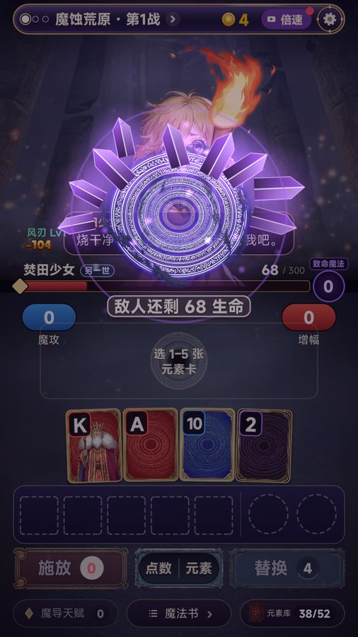
F3
首次回营地只亮一件事：唤醒
P0成本 S–M要你决定：评审页⑤（三联图）问题第一次回营地有 4 个红点、气泡、残语、5 个菜单；目标是「击败云间断桥的守关者」，可玩家下一局在荒原就死了。真正该做的唤醒只是一个小角标。
方案布局不动，只做三件事：先藏起其他红点；残语之后加一次遮罩加手指，指向源泉「唤醒一系魔法，下次开局它 +1 级」；营地目标改成「最近 3 局最远关 +1」，不计引导局，文字写成「下一步：击败荒原的守关者」，世界观句子放第二行。
预期收益唤醒使用率、第 2 局开局率。
来源：FTUE P0-4、P1-6
F4
引导文字两处
P0成本 S问题第一句就写着「新手教学 2 / 16」，等于提前告诉玩家教程很长；「怎么玩」第 1 页没提结晶、唤醒、强化。
方案去掉分母，只写「新手教学」；「怎么玩」改成「倒下也有收获：击败的敌人化作魔力结晶，回营地唤醒、强化魔法，下次更强」。
预期收益引导完成率；第一次死亡后的「再来一局」率。
来源：FTUE P1-1、P1-12
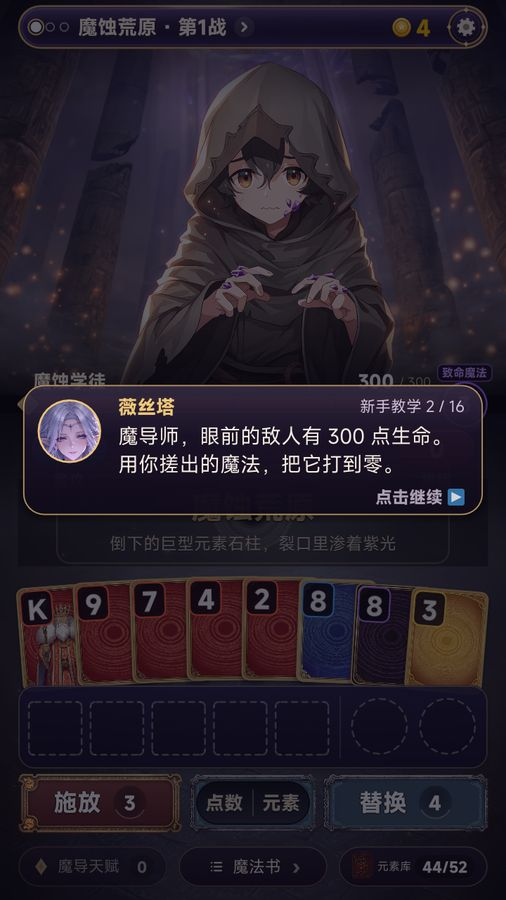
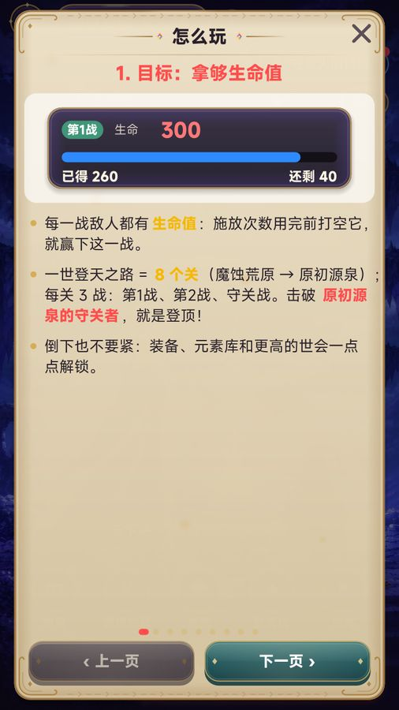
F5
第一次「哇」提前到第 1 局
P1成本 M要你决定：Q6问题商店卖的是「灭世禁咒」，新手前 3 局只看得到初级雷弹，第一下还没打死。
方案引导局击败荒原守关者后，薇丝塔借出一次力量（叙事上写成「源泉的回响」）：下一次施放按高级演出播放，伤害不变；第一次唤醒后的那一局，该系第一次施放也播高级切入。只改演出，不改数值。
预期收益首局完成率、第一次截图冲动、D1；商店承诺和实际体验对上。
来源：FTUE P0-8、吸量「3 秒钩子」
F6
击败守关者后的三段叙事合成一张卡
P1成本 M要你决定：评审页⑥问题每次击败守关者，连着出现掌心印记演出 → 断章全屏 → 残卷全屏，每关一次。
方案合成一张卡：守关者立绘 + 一句断章 +「残卷已收入典籍」角标，「轻触继续」一次结束；完整断章放进典籍，不删。
预期收益局内流畅度，第 2–4 关的推进时长。
来源：FTUE P1-8
F7
局外系统按局数逐个开放
P1成本 M要你决定：Q7问题第 1–3 局一共冒出 13 个局外系统。
方案按 Q7 的开放表：每局最多新开 1 个，只亮 1 个红点，配一句薇丝塔的引导；没开的系统直接隐藏，不显示上锁。老存档按 runs 判断，直接全开。
预期收益D1 / D3，各系统的首次使用率。
来源：FTUE P1-5、RETRO P1-02
F8
术语统一：一个东西只用一个名字
P1成本 M要你决定：Q9问题升级包、法术强化、魔法卷、魔法升级 4 种叫法；装备和遗物混用；魔法书一词两用；「强化牌」和局外「强化」撞名；「魔晶」和「魔力结晶」很像。
方案局内升级物统一叫「魔法卷」；「遗物」改为「装备」；局内牌型表叫「魔法一览」，局外叫「魔法书」；「强化牌」改为「附魔卡」；局内货币改名（Q9）。在 words.lua 集中改，加进 test_words 的禁用词；论坛帖和成就名同步。
预期收益理解度（「怎么玩」访问量可以当反向指标）。
来源：FTUE P1-4
F9
让玩家自己发现牌型
P1成本 M问题12 种魔法只靠一张表介绍，不会扑克的玩家记不住「冰 = 顺子」。
方案引导加一步「随便点 2 张同数字的牌，看看会搓出什么」，让实时预览替玩家发现一次对子（合并掉 t_runinfo，总步数不变）；预览条的魔法名旁边常驻一个牌型小图标；魔法书表格按「施放过」高亮。不做手牌可组合描边（那会替玩家选牌）。
预期收益第 1–3 局的平均每手伤害；同花 / 顺子的施放占比。
来源：FTUE P1-2、P1-3（去掉描边）
F10
失败页「去变强」直达
P1成本 S问题结算页 6 个元素；「可唤醒一系」金章不能点；0 结晶时整行不显示；唤醒在机器人局里累积到 ×2 都没人用。
方案金章和新征途页的提醒条都能点，点了直接打开唤醒；0 结晶显示「+0 魔力结晶 · 击破 1 个敌人就有 10」；分享收成右上角小图标，咒谱码折叠，「怎么玩」只在前 3 次死亡时显示。
预期收益唤醒使用率、「再来一局」率。
来源：FTUE P1-7、P2-5
F11
2× 倍速首次击败荒原守关后免费
P1成本 S要你决定：Q2（随护航一起定）问题一次施法加装备触发约 7.5 s；倍速要看广告，而广告还没开通。
方案第一次击败荒原守关者后免费开放 2×，4× 留给广告或后续解锁。
预期收益每局时长和第 3–5 局留存。
来源：FTUE P1-10、RETRO P1-09
F12
守关规则前置，提示限流
P1成本 S问题守关规则只在登场时闪过；第 1 关第 2 战后的 2 分钟里弹了 4 个小提示。
方案选战斗页把致命魔法放大成一行，和生命值同级；利息、刷新这类低优先级提示推到第 2 局；每屏最多 1 个提示，进商店时最多 2 个。
预期收益守关战胜率、引导满意度。
来源：FTUE P1-9、P2-2
F13
5 人真人首局测试
P0成本 S问题以上结论来自机器人，它比新手快得多、强得多。
方案找 5 个没玩过 Balatro 的人，按 FTUE 的时间轴记录退出点和卡点，重点验证 F2 的断崖和 F1 的 CG。第一批改完后做，第三批 Go / No-Go 之前出结论。
预期收益验证所有 P0，避免改错方向。
来源：FTUE P2-8、RETRO P0-09
吸量（14 条）
决定能拉到多少人的是首页推荐卡片的点击率，不是日历。目标：首页推荐点击率 ≥15%，详情页 → 预约 ≥12%。
U1
商店截图重排、补拍
P0成本 M要你决定：Q4问题第 1 张是登录页；最能说明玩法的 −205.8 万排在第 4 张，数字还很小；第 7 张是原图裁成 9:16，不是游戏内截图（违反「必须是真实游戏画面」）。
方案新顺序（全部真机渲染、不加字）：① 守关战 −205.8 万数字最大的峰值帧（重拍）② 禁咒「万物归暗」③ 游戏内触发的唤醒 CG ④ 火星 −156 ⑤ 魔法书 12 系（游戏内截图）⑥ 商店 ⑦ 营地。标题画面和原图 CG 撤下（标题画面也可以放到最后）。不放第 8 关画面。
预期收益详情页 → 预约 5.3% → 8%–12% [推断]，同时消掉「非真实画面」的风险。
来源：吸量 P0-03
U2
宣传片 v4（v3 不上传）
P0成本 M要你决定：Q4问题v3 的 0–5.5 s 和片尾是黑脸法师，没有薇丝塔，没有实机，片尾还写着「TapTap 预约中」，转可玩当天就过期。
方案先给你 6 行分镜：第 0 帧薇丝塔主视觉加字标（当封面）→ 白闪切到实机 −205.8 万 → 实机选牌、魔法名实时变化 → 保留 v3 的「小火球 −52 → 爆炎 → 焚天 −205.8 万」→ 禁咒快剪加一帧薇丝塔 CG → 字标。不写「预约中」；不用 AI 视频重画守关者；不出第 8 关；口播第二版再加。
预期收益详情页第一个媒体位就能讲清「牌 → 魔法 → 大数字」，首页推荐也多一个预告片选项。
来源：吸量 P0-04
U3
实机录屏重剪前 5 秒
P0成本 S要你决定：随 Q4 一起审片问题现在前 5 秒只有百位数，没有爆点。
方案0–2 s 放守关战 −205.8 万那一手（本身就是实机核心玩法），接着从第 1 战讲凑牌 → 魔法；只用游戏原声；和宣传片用不同的局，避免两者高度雷同。
预期收益详情页自动播放的第一秒就能留住人。
来源：吸量 P0-05
U4
素材攒成一次提交，定看数规则
P0成本 S问题2 天发了 8 个资料版本，归因已经分不清；首页推荐 11-08 换成薇丝塔后是 5/19（26.3%），样本太小。
方案截图、录屏、宣传片、标签（卡牌、Roguelike、卡牌构筑、策略、魔法、二次元、单机、竖屏；简介里自然带一次「肉鸽构筑」「牌型」，不写其他游戏名）一次提交，tcm release --now，保持预约；之后每次至少观察 48 h。首页推荐 11-09 – 11-12 保持宣传图，v4 过审后切预告片，各看 ≥500 次曝光，谁高留谁。判断线：首页推荐点击率 ≥15%、详情页 → 预约 ≥12%。
预期收益每一次改动都能看出效果；首页推荐点击率过 15%–18% 才会被放量。
来源：吸量 P0-06、P1-02、P1-03
U5
定时转可玩的日期和上线清单
P0成本 M要你决定：Q3问题预约期每天只有 200–600 次曝光，等得越久收益越小；日历只给定时上线的版本，而且只有一天。
方案目标 11-18（周三）0:01；11-16 做 Go / No-Go：B2、B3、B8 和最新 Spark 真机广告都达标，素材换齐，precheck 没有 LEVEL_PUBLISH_BLOCKED，同厂商同一天没有别的游戏。达标后用 tcm release --status play --at "2026-11-18 00:01"，至少提前 6 h 提交。上线日按清单走：0:01 群公告 → 8:00 论坛公告 → 12:00 安利视频 → 20:00 回复全部评价 → D+2 修 bug 小版本。你拍板之前保持预约。
预期收益日历 7 万–8 万曝光（参照同门），约 1.1k–1.3k 次点击；能留下多少人取决于同一天首页推荐的点击率。
来源：吸量 P0-07、P2-05
U6
备胎素材：带牌的宣传图 B，以及图标 A/B
P1成本 M要你决定：评审页⑥问题首页推荐卡片里没有任何「牌」，3 秒内能看出「卡牌」的只有推荐语。
方案同一个薇丝塔、同一个字标，手边扇形摊开四色元素卡，魔力球从卡上升起（NovelAI 管线）。先出评审页，等 U4 的判断线：首页推荐点击率 <10% 才换上去。图标 A/B（薇丝塔加一张发光元素卡）等有了 ≥2k 曝光的基线再试，一次只改一个变量。
预期收益A 不达标时有现成的替补。
来源：吸量 P1-01、P2-03
U7
动态安利短视频 2 支
P1成本 M要你决定：Q10问题论坛 3 帖，回复 0、点赞 0；动态是唯一能把内容推给关注者以外的人的免费渠道。
方案compose_anli.py 做 2 支 20–40 s 竖版：①「一对水能打出两百万？」②「十二系魔法哪个最帅」（不出第 8 关）。个人身份发，绑「玩家说」，话题第一个放 #安利视频。一支预约期发，一支上线当天发。
预期收益低成本试验，目标每支 ≥1k 播放、≥10 个预约 [假设]。
来源：吸量 P1-04
U8
论坛和晒图出口
P1成本 S要你决定：「本周咒谱码」需要有人每周值守问题每天一篇的介绍帖都是 0 回复；局内分享海报、咒谱码、今日挑战榜都有了，但没有地方晒。
方案11-12 以后改成隔天一篇；第 4 篇「先练哪一系」加投票；「预约答疑」挪到上线前 2 天；上线后开置顶帖「晒出你的最强一击」，复制战绩的提示把它当去处；每周一「本周咒谱码」，每周日「本周试炼前三」；留言 24 h 内回复。
预期收益上线后论坛是承接留存的地方。目标：首周每帖平均 ≥3 条回复。
来源：吸量 P1-05、P1-07b/c、P2-04
U9
QQ 群冷启动
P1成本 S要你决定：Q10问题FIRE 工作室群已经挂在详情页上，但群里没有这款游戏的内容。
方案在 1131361528 发群公告（预约链接、薇丝塔宣传图、禁咒 GIF），群相册放禁咒图鉴；上线当天 0:01 @全体。群名不改。
预期收益工作室老玩家是转化最便宜的人群。
来源：吸量 P1-06
U10
开服礼（代替预约礼）
P1成本 S–M要你决定：Q9问题没有预约奖励，游戏里也没有兑换码系统；清单规定不能承诺游戏里发不了的奖励。
方案上线首周进入游戏就送：一件薇丝塔限定卡背（外观）加少量结晶，按存档发一次。真机测过之后，再写进简介和「预约答疑」帖。
预期收益预约页有了具体奖励，详情页 → 预约 +1–3 个百分点 [假设]。
来源：吸量 P1-08
U11
创作者 / UP 主预览
P1成本 M要你决定：Q10问题没有任何外部声量。
方案挑 10–20 个做卡牌肉鸽的 TapTap 创作者和 B 站 UP 主，转可玩前 3–5 天给测试资格，附 3 个能打出百万的咒谱码和素材包（不含第 8 关）；不付费、不要求好评；测试包和上线包必须一致。
预期收益哪怕只有 1–2 人发，也能在日历之外多带来几百到几千次曝光。
来源：吸量 P1-09
U12
分享海报自检和分享 KPI
P1成本 S问题三种海报都没逐张检查过，注释里还有旧比赛文案。
方案B4 修完后，用导演开关逐张渲染爆分、登顶、赛况三种海报；用 TapDB 的 share_open / run_end 定 KPI，目标 ≥5%。海报角落加薇丝塔放到 P2。
预期收益每 100 个玩家产生 2–5 张晒图，晒图可以再做成动态素材。
来源：吸量 P1-07a/d
U13
暂不买量；广告点位上线后再调
P2成本 S要你决定：Q10问题纯 IAA 首周 LTV 估算 ¥0.12–0.24 / 人 [假设]，远低于买量成本。
方案首页推荐点击率没过 15% 之前一分钱都不投；之后最多 ¥200–300 测素材点击率。上线首周看每个点位的展示 → 完成率，低于 30% 的就提奖励或合并；倍速考虑改成看 1 次永久解锁。
预期收益不浪费钱，收入和体验兼顾。
来源：吸量 P2-01、P2-02
U14
标题不改
P2成本 S问题完整标题 15 字，在卡片上会被截断。
方案不改名（已经改过 9 次，「手搓魔法」印在所有素材上），只确保字标上「手搓魔法」四个字足够大。
预期收益保住已有的认知。
来源：吸量 P2-06
执行顺序（三批）
第一批：你确认后马上做（11-09 – 11-10，约 1.5 人日）
便宜、收益高、风险低，全是修 bug 和不改画面的改动，不需要评审页。
- B1 开包回归（先修，再出任何构建）
- B2 广告兜底（按 Q1 / Q2）
- B4 旧文字泄漏
- B5 压字裁字
- B6 提示让位守关者
- B7 残语一次一段
- B8 隐私政策和「星铁」
- A2 另一世立绘超分
- F1 开场短版（按 Q5）
- F2 新手护航（按 Q2 / Q8，含 3 次施放 sim）
- F4 引导文字
- F10 失败页直达唤醒
- F12 规则前置、提示限流
- B3 你补凭据之后同步推进门槛
第二批：要过评审页的视觉和体验改动（11-10 – 11-13）
6 张评审页，每张都放前后对照；你逐页点头之后再提交、构建。
- 评审页①「打磨合集」：A1 禁咒 / 成王、A4 空状态、A5 排版、A6 结局页、A7 伤害数字
- 评审页②「元素牌牌面」：A3（营地截图 + 手牌特写，前后对照）
- 评审页③「八关对比」：A10 色彩、敌人分级、另一世
- 评审页④「按钮与面板」：A8（全局改动，单独评审）
- 评审页⑤「营地三联图」：F3 首次只亮唤醒、A9 营地随进度变化、F7 开放表
- 评审页⑥「商店素材 + 叙事卡」：U1 截图、U2 宣传片 v4 分镜和成片、U3 录屏、U6 宣传图 B、F6 守关后叙事卡
- 同期不需要评审页的代码：F5 第一次「哇」、F8 术语（按 Q9）、F9 自由试搓、F11 倍速
第三批：跟着上线计划走（11-12 – 11-22）
这一批按两周时间表推进，最后一个 Spark 包要包含第一、二批的全部改动。
- U4 一次提交素材和标签（11-12）
- F13 真人测试（11-13 – 11-15）
- A11 包体瘦身和真机性能（进最终 Spark）
- U10 开服礼（进最终 Spark）
- U7 安利视频、U8 论坛、U9 QQ 群、U11 创作者、U12 分享自检
- U5 11-16 Go / No-Go → 11-18 0:01 定时上线（按 Q3）
- 上线后再做：A12 禁咒 2.5D、A13 打磨包、U13 点位调参、U6 图标 A/B、U14
两周时间表
| 日期 | 关键动作 | 完成标志 |
|---|
| 11-09 周一 | 你补 podium 凭据 → 查门槛、签激励、用最新 Spark 提交备案；第一批开工（B1 当天修完） | 备案进入审核中；B1 回归测试通过 |
| 11-10 周二 | 第一批收尾（B2 兜底、隐私、星铁）；重拍截图、重剪录屏；评审页①② | 第一批构建出包；评审页上线 |
| 11-11 周三 | 宣传片 v4 分镜 → 成片；评审页③④⑤⑥；开服礼开发 | 你审完素材和视觉 |
| 11-12 周四 | 素材 + 标签一次提交（保持预约）；安利视频 ① 发出；论坛改隔天一篇 | 资料审核通过 |
| 11-13 – 15 | 观察首页推荐（宣传图、预告片各 ≥500 曝光）；真人测试；创作者资格；备案通过后开广告、真机测 8 个点位；出最终 Spark | 点击率有读数；广告真机通过 |
| 11-16 周一 | Go / No-Go（你决定）；达标就提交 11-18 0:01 定时；「预约答疑」帖；群公告 | 状态变成定时上线 |
| 11-18 周三 0:01 | 上线日清单 | 日历 ≥5 万曝光，首页推荐点击率 ≥15% |
| 11-19 – 22 | 首日复盘；D+2 修 bug 版本；晒图置顶帖；第一期「本周咒谱码」；按完成率调点位 | D1 ≥30% [目标] |
顺延规则：备案没在 11-15 前通过，就整体顺延到「备案通过后的下一个周二或周三 0:01」，期间保持预约。不为了赶日期先开放、再补广告。
需要你拍板的事
Q1 广告不可用时，「施放 −1」怎么兜底？
选 A：广告不可用时直接赠送「守泉人的馈赠」，恢复 4 次施放，同时隐藏所有广告按钮。B（取消 −1、馈赠改成别的奖励）要重排奖励，留到上线后看点位完成率再说；C（维持现状、广告开通前不上线）会让门槛一拖再拖，玩家照样吃亏。
Q2 广告开通以后，新手还白送馈赠吗？倍速什么时候免费？
前 3 局白送，从第 4 局起才要看广告；2× 倍速在第一次击败荒原守关者后免费，4× 留给广告。 这两项和 F2 护航一起，针对的就是最容易卸载的第 2、3 局。
Q3 定时转可玩的日期？
定 11-18（周三）0:01，11-16 做 Go / No-Go。 门槛不齐就顺延到下一个周二或周三。在你拍板之前一直保持预约。
Q4 宣传片走 v4 吗？截图按新顺序换吗？
做 v4，v3 不上传：薇丝塔开场加实机，保留 v3「小火球 → 灭世」那 10 秒；首版不加口播，先看点击率。截图按 U1 的新顺序换，原图 CG 必须撤（合规）；标题画面我建议撤，你舍不得的话就放到最后一张。
Q5 开场 CG 首次只播约 30 秒？
是：首次播 i1、i5、i6、i7，完整版在第一次击败荒原守关者后播放，也可以在设置里重看。不加「点一下跳过单张」，守住你 11-07 的规定；中文配音不在这一轮做。
Q6 第 1 局里借一次高级演出（只演出、伤害不变）？
做，叙事上写成「源泉的回响」。这是让新手前 3 局就看到商店承诺的最便宜的办法，而且不碰数值。
Q7 局外系统的开放节奏？
按这张表：第 1 局后唤醒 → 第 2 局后魔法书 · 强化 → 第 3 局后典籍 → 第 4 局后掌心 / 传承和另一世 → 第 5 局馈赠入口（广告开通时）→ 第 6 局每日试炼和登天榜 → 第 8 局或击败第 3 关后成就和登顶记录 → 首次登顶后第 2 世和无尽。没开放的系统直接隐藏；老存档全开。
Q8 前 3 局的新手护航做到哪一步？
做两项：第 2–3 局第一个商店保底 1 件基础增幅装备；前 3 局不出另一世敌人。规则和曲线不动。上线前用 sim 跑 3 次施放，第 1 关通过率给你过目。
Q9 术语改名，以及开服礼送什么？
局内货币「魔晶」改成「魔石」，「强化牌」改成「附魔卡」，「遗物」统一成「装备」。 开服礼送薇丝塔限定卡背加 100 结晶（不到 2 次强化，不冲击刚调好的强化曲线），首周进游戏即送。
Q10 对外动作：安利视频、QQ 群公告、创作者联系、买量？
前三项都做：安利视频要你确认人设和声音，发布用你本人的身份；群公告和创作者名单我先拟好给你过目。暂不买量，首页推荐点击率过 15% 再拿 ¥200–300 测素材。